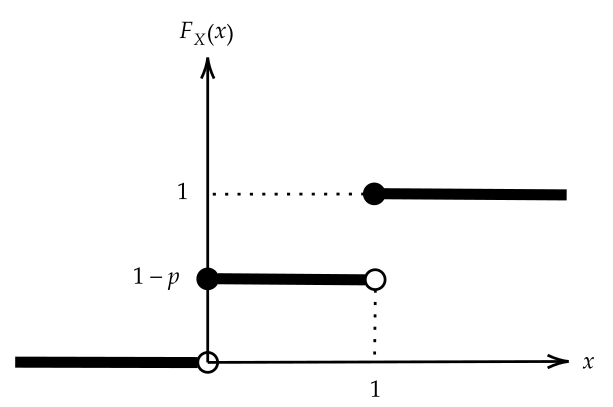

p = 0.5
u = runif(1)
ifelse(u < (1-p) , 0, 1) [1] 0در بیشتر دروس نظری و عملی رشته آمار فرض میشود متغیرهای تصادفی \(X_{1},\ldots,X_{n}\) نمونهای تصادفی از جامعهای با تابع چگالی (جرم) احتمال \(f_{\theta}(x)\) هستند. معمولاً بر اساس مقادیر مشاهده شده این نمونه تصادفی (مشاهدات \(x_{1},\ldots,x_{n}\)) در مورد پارامترهای مجهول \(f_{\theta}(x)\) استنباط میشود. در این فصل مایلیم با فرض معلوم بودن فرم ریاضی تابع چگالی (جرم) احتمال و معلوم بودن پارامترهای آن به تولید متغیرهای \(X_{1},\ldots,X_{n}\) بپردازیم.
تولید عدد تصادفی از یک توزیع احتمال، شبیهسازی توزیع احتمال نامیده میشود. نرمافزار R با توجه به قابلیتهای فراوان، ابزار اصلی برای پیادهسازی الگوریتمهای شبیهسازی میباشد.
شبیهسازی از توزیعهای گسسته به سه روش انجام میگیرد:
روش وارون
روش رد-پذیرش
روش مرکب
متداولترین روش برای شبیهسازی از متغیرهای تصادفی روش وارون است. اساس کار این روش استفاده از قضیه تبدیل انتگرالی احتمال1 و عکس آن2 میباشد.
قضیه (عکس تبدیل انتگرالی احتمال): فرض کنید \(F_{X}(.)\) یک تابع توزیع تجمعی دلخواه (گسسته یا پیوسته) و \(U\) یک متغیر تصادفی با توزیع یکنواخت پیوسته روی بازه (0,1) باشد. اگر \(F_X^{-1}(.)\) وارون تعمیم یافته این تابع توزیع باشد که به صورت زیر تعریف میشود:
در این صورت متغیر تصادفی \(F_X^{-1}(U)\) دارای تابع توزیع \(F_{X}(.)\) است، یعنی دو متغیر \(F_X^{-1}(U)\) و \(X\) هم توزیع هستند.
نکته: در صورتی که تابع \(F\) وارونپذیر (اکیداً صعودی و پیوسته) باشد، \(F^{-1}(u)\) همان وارون معمولی (چندک) تابع \(F\) است.
نکته:برای سادگی در نوشتار و همچنین مشابه بودن نمادگذاری دو متغیر تصادفی هم توزیع، در ادامه این فصل متغیر تصادفی \(F_X^{-1}(U)\) را با نماد \(X^{*}\) نشان میدهیم. یعنی بر اساس قضیه قبل داریم
\[ X^{*} \overset{D}{=} X \quad \Rightarrow \quad F_X^{-1}(U) \sim F_X \]
با استفاده از قضیه فوق و با در اختیار داشتن تابع توزیع \(F_{X}(x)\) میتوان مقادیری از متغیر تصادفی \(X^{*}\) را شبیهسازی کرد و چون این متغیر با متغیر هدف \(X\)، همتوزیع میباشد، میتوان این مقادیر تولید شده را به عنوان مقادیر تولید شده از متغیر هدف در نظر گرفت.
الگوریتم روش تبدیل وارون: برای تولید یک عدد تصادفی به روش وارون از متغیر تصادفی \(X\) با تابع توزیع \(F^{-1}_X\) گامهای زیر را انجام میدهیم:
تابع \(F_X^{-1}(.)\) را بدست میآوریم.
یک مقدار تصادفی \(u\) را از توزیع \(\mathcal{U}(0,1)\) تولید میکنیم.
مقدار \(F_X^{-1}(u)\) را به عنوان عدد تولیدی محاسبه میکنیم.
مثالهای زیر شیوه استفاده از الگوریتم بالا را نشان میدهند.
مثال 1:فرض کنید \(X\sim \mathcal{B}in(1,p)\). به روش وارون یک عدد تصادفی از این توزیع تولید کنید.
\[\begin{align*} &\mathbb{P}(X=x)=p^{x}(1-p)^{1-x} \quad ; x=0,1 \notag\\[0.5cm] &\Rightarrow F_{X}(x)= \begin{cases} 0 & \quad ; x<0 \\ 1-p & \quad ; 0\leq x<1 \\ 1 & \quad ; x\geq 1\\ \end{cases} \end{align*}\]

\[ \begin{align*} &X^{*}=\min \{x|F_{X}(x)\geq u\}=\begin{cases} \min \{[0,+\infty)\}=0 & \quad ; 0<u<1-p \\ \min\{[1,+\infty)\}=1 & \quad ; 1-p<u<1 \\ \end{cases}\notag\\ \Rightarrow \quad &X^{*}= \begin{cases} 0 & \quad ; 0<u<1-p \\ 1 & \quad ; 1-p<u<1 \\ \end{cases} \end{align*} \]
بنابراین کافی است ابتدا با استفاده از تابع runif یک عدد تصادفی از توزیع یکنواخت روی بازه \((0,1)\) تولید کنیم و با جایگذاری در رابطه فوق مقادیر \(x^{*}\) را تولید کنیم.
p = 0.5
u = runif(1)
ifelse(u < (1-p) , 0, 1) [1] 0تمرین 1: با استفاده از نرمافزار R برنامهای بنویسید که از توزیع \(\mathcal{B}in(1,p)\) یا همان \(\mathcal{B}er(p)\)، \(n\) عدد تصادفی تولید کند.
بیان ساده قضیه قبل به صورت زیر میباشد.
فرض کنید \(X\) یک متغیر تصادفی گسسته با تابع جرم احتمال \(\mathbb{P}(X=x_{i})=p_{i}\quad i=1,2,\ldots\) باشد. در این صورت با فرض اینکه \(u\sim \mathcal{U}(0,1)\) و چون \(F_{X}(x_{i})=\mathbb{P}(X\leq x_{i})=\sum_{j=1}^{i}p_{j}\) ، نتیجه میشود: \[\begin{align*} &F_{X}(x)=\begin{cases} 0 & \quad ; X<x_{1} \\ p_{1} & \quad ; x_{1}\leq X<x_{2} \\ p_{1}+p_{2} & \quad ; x_{2}\leq X <x_{3} \\ ~~~ \vdots & \quad ~~~~~~\vdots\\ 1\\ \end{cases}\notag\\&\Rightarrow X^{*}=\begin{cases} x_{1} & \quad ; u<p_{1} \\ x_{2} & \quad ; p_{1}\leq u<p_{1}+p_{2} \\ ~~\vdots& \quad ~~~~~~\vdots\\ x_{i} & \quad ;\sum_{j=1}^{i-1}p_{j}\leq u<\sum_{j=1}^{i}p_{j}\\ ~~\vdots& \quad ~~~~~~\vdots\\ \end{cases} \end{align*}\]
طبق قضیه قبل باید نشان دهیم \(X^{*}\) دارای توزیع \(F_{X}(x)\) است. به عبارت دیگر باید نشان دهیم که \(\mathbb{P}(X^{*}=x_{i})=p_{i}\).
\[\begin{align*} \mathbb{P}(X^{*}=x_{i})=&\mathbb{P}(\sum_{j=1}^{i-1}p_{j}<u<\sum_{j=1}^{i}p_{j})=\int_{\sum_{j=1}^{i-1}p_{j}}^{\sum_{j=1}^{i}p_{j}}du\notag\\&=\sum_{j=1}^{i}p_{j}-\sum_{j=1}^{i-1}p_{j}=p_{i} \end{align*}\]
بنابراین با توجه به مطالب بیان شده، فرآیند بالا را میتوان در قالب الگوریتم زیر خلاصه کرد.
یک عدد تصادفی از توزیع یکنواخت پیوسته روی بازه \((0,1)\) تولید میکنیم
اگر \(u<p_{1}\) آنگاه \(X^{*}=x_{1}\) و الگوریتم متوقف میشود، در غیر اینصورت به گام بعد میرویم.
اگر \(u<p_{1}+p_{2}\) آنگاه \(X^{*}=x_{2}\) و الگوریتم متوقف میشود، در غیر اینصورت به گام بعد میرویم.
اگر \(u<p_{1}+p_{2}+p_{3}\) آنگاه \(X^{*}=x_{3}\) و الگوریتم متوقف میشود، در غیر اینصورت به گام بعد میرویم.
…
به عبارت دیگر در هر مرحله مقدار متغیر \(X\) را با پیدا کردن بازهی \(\Big(F(x_{i-1}),F(x_{i})\Big)\) که شامل \(u\) میشود یا بهطور معادل پیدا کردن \(F^{-1}(u)\) به دست میآوریم.
مثال 2:فرض کنید \(X\sim \mathcal{D}u(\{1,2,\ldots,n\})\) . با استفاده از روش وارون از این توزیع داده تصادفی تولید کنید.
\[\begin{align*} &\mathbb{P}(X=j)=\dfrac{1}{n} \quad ;j=1,2,\ldots,n\\ &F_{X}(x_{j})=\mathbb{P}(X\leq x_{j})=\mathbb{P}(X\leq j)=\dfrac{j}{n}\\ &\Rightarrow X^{*}=j \quad \mathrm{if} \quad \dfrac{j-1}{n}<u<\dfrac{j}{n}\\ &\Rightarrow j-1<nu<j \end{align*}\] پس \(X^{*}=j\) خواهد بود اگر داشته باشیم \(j-1<nu<j\) یا به عبارتی \([nu]=j-1\) پس میتوان گفت \[\begin{align*} X^{*}=[nu]+1 \end{align*}\] به عنوان مثال اگر \(n=5\) باشد و \(u=0.3\) داده تصادفی از توزیع \(\mathcal{D}u(\{1,2,\ldots,5\})\) برابر است با \[\begin{align*} X^{*}=[5\times0.3]+1=[1.5]+1=2 \end{align*}\]
n = 5
u = runif(1)
x = floor(n*u) + 1
x[1] 4تمرین 2: با استفاده از نرمافزار R، برنامهای بنویسید که از الگوریتم فوق n داده تولید کند.
تمرین 3: اگر \(X\sim \mathcal{D}u\Big(\{3,4,\ldots,N\}\Big)\) باشد، با استفاده از نرمافزار R، برنامهای بنویسید که از این توزیع n داده تولید کند.
تمرین 4: فرض کنید \(X\) یک متغیر تصادفی باشد که مقادیر \(x_{1},x_{2},\ldots x_{n}\) را با احتمالهای \(\mathbb{P}(X=x_{i})=p_{i}\) اختیار کند. برنامهای بنویسید که بر اساس روش وارون از این توزیع عدد تصادفی تولید کند.
مثال 3: فرض کنید \(X\) یک متغیر تصادفی با تابع جرم احتمال به صورت زیر باشد. الگوریتمی برای تولید داده از این چگالی با استفاده از روش وارون ارائه دهید.
| 4 | 3 | 2 | 1 | \(\{X=j\}\) |
| 0.4 | 0.25 | 0.15 | 0.2 | \(\mathbb{P}(\{X=j\})\) |
عدد تصادفی \(u\) را از توزیع \(\mathcal{U}(0,1)\) تولید میکنیم
اگر \(u<0.2\) عدد تصادفی تولیدی \(x^{*}=1\) خواهد بود، در غیر این صورت به گام بعد میرویم.
اگر \(0.2<u<0.35\) آنگاه \(x^{*}=2\) خواهد بود، در غیر این صورت به گام بعد میرویم.
اگر \(0.35<u<0.6\) آنگاه \(x^{*}=3\) خواهد بود، در غیر اینصورت به گام بعد میرویم.
اگر \(0.6<u<1\) آنگاه \(x^{*}=4\) خواهد بود
u = runif(1)
if(u < 0.2){
x = 1
}else if(u < 0.35){
x = 2
}else if(u < 0.6){
x = 3
}else{
x = 4
}
x[1] 2تمرین 5: با استفاده از نرمافزار R، برنامهای بنویسید که از الگوریتم فوق n داده تولید کند.
مثال 4: فرض کنید \(X\) متغیر تصادفی تعداد آزمایش مورد نیاز تا رسیدن به اولین موفقیت باشد. با استفاده از روش وارون الگوریتمی برای تولید داده از توزیع هندسی با پارامتر \(p\) ارائه دهید.
\[\begin{align*} \mathbb{P}(X=x)=pq^{x-1} \quad ; x=1,2,\ldots \quad ; q=1-p \end{align*}\]
طبق روش بیان شده داریم:
\[\begin{align*} X^{*}=i \quad \mathrm{if} \quad \sum_{j=1}^{i-1}\mathbb{P}\{X=j\}<u<\sum_{j=1}^{i}\mathbb{P}\{X=j\} \end{align*}\]
از طرفی
\[\begin{align*} &\sum_{j=1}^{i}\mathbb{P}\{X=j\}=1-\mathbb{P}\{X>i\}=1-q^{i}\\ \Rightarrow& X^{*}=i\quad \overset{\mathrm{if}}{\Rightarrow} \quad 1-q^{i-1}<u<1-q^{i}\quad \Rightarrow q^{i}<1-u<q^{i-1} \end{align*}\]
حال با توجه به یکنوا بودن تابع \(\log\)، داریم
\[\begin{align*} &\log(q^{i})<\log(1-u)<\log(q^{i-1})\\ \Rightarrow \quad & i\log(q)<\log(1-u)<(i-1)\log(q) \end{align*}\]
چون \(\log(q)<0\) پس
\[\begin{align*} i-1<\dfrac{\log(1-u)}{\log(q)}<i \end{align*}\]
و در نهایت
\[\begin{align*} X^{*}=\Big[\dfrac{\log(1-u)}{\log(q)}\Big]+1 \end{align*}\]
و چون \(1-U\overset{D}{=}U\) پس میتوان نوشت
\[\begin{align*} X^{*}=\Big[\dfrac{\log(u)}{\log(q)}\Big]+1 \end{align*}\]
p = 0.5
u = runif(1)
x = floor(log(u)/log(1-p))+1
x[1] 1تمرین 6: با استفاده از نرمافزار R، برنامهای بنویسید که از الگوریتم فوق n داده تولید کند.
تمرین 7: فرض کنید \(X\) متغیر تصادفی هندسی (مدل تعداد شکست) باشد، الگوریتمی برای شبیهسازی از این توزیع بر اساس روش وارون ارائه و آن را در \(R\) پیادهسازی کنید.